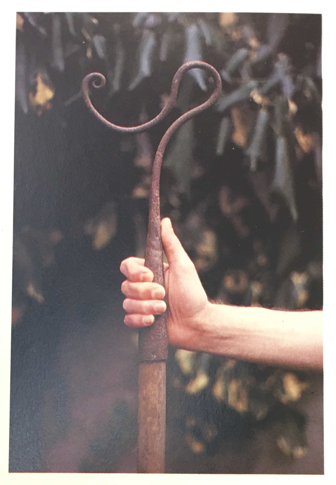
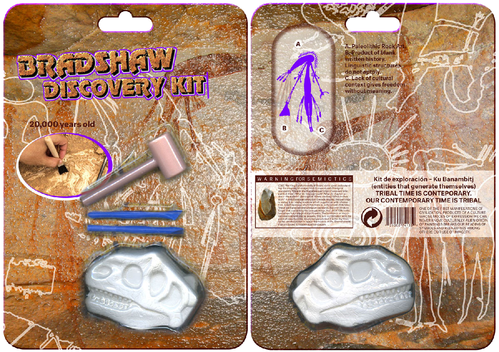

MOM ARE YOU THERE?
Three daughters of mother Gaia are standing next to the bed of their mom, contemplating how to wake her up out of her oblivion.
All bringing the meeting to different places and times, they collide at this crucial moment, attempting to bring their mother out of her vegetable state, by proposing different plans and beliefs to ameliorate the situation on earth.
SILK GARDENER IN THE LIME LAVA FOREST
- Laboratorial-Gardener
- rational/scientific
- hands-on
- sticks to linguistic structures
- pro-urban
- literal/physical approach of nature (EVERYTHING WHERE NATURE THRIVES)
enlarging definition nature
bringing nature to the city - planting in a post-wild world = THE NEW WILD
mean making of art
solar punk
For systematization of nature, nature unnaturally organized
Pro invasive species (invasion biology)
ATRIBUTES:
Wears a laboratorium coat woven by urban caterpillars

Visuele voorbeelden: Natural History Museum
(Emma Marris, Fred Pearce, Hanski)

PIGMENTED CAVEWOMAN IN THE CLOUD COMPELLING ROCK SITE
- spiritual
- anti-urban
- nature as ‘idea’ of spirit, not literally flora & fauna
- examines spirits embodied in contemporary media
- wants to coin a new language

Spiritual being is still in us
Energy of the cave paintings
experiencing art works
Visual examples: Gwion Gwion Paintings,
(Marina Warner, Peter Halley, Walter Benjamin, Werner Herzog)

CRYSTAL DUSTED WITCH
- technological
- progressive
- for invasion of technology on the human body
- we are literally embodied by liquid crystal, which are also used for the manufacturing of our screens. We are technology, humans are nature.
Nature=technology
- historicization of the idea of nature
Science, technology and production simulate the crucial powers of nature.
Suggests different materiality for technology. Draw line with Cronenberg and how non-nature is impermeable surfaces (like technology now). technology should have materiality such as cork and breathing silicone.
Culture seizes the opportunity to simulate the crucial powers of nature: the power of thought for example, repeated in the computer.
Visual examples: Cronenberg,
(Roland Barthes, Stelarc, Virginia Heffernan, Cronenberg, Esther Leslie)